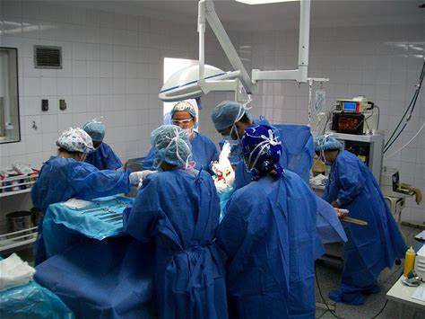
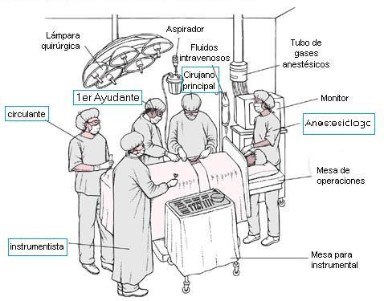
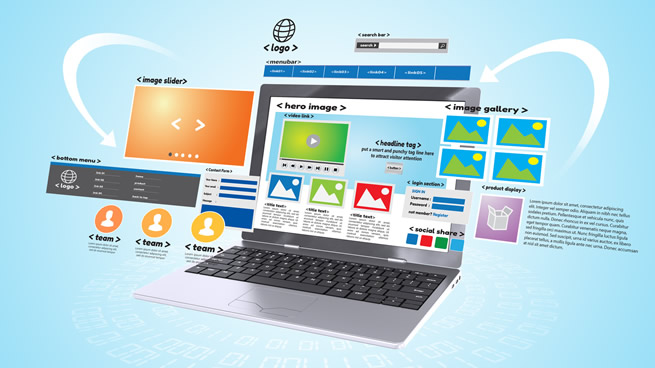

Que es la cirugia?

Por:Dr. Kevin Aparicio
Se denomina cirugía a la práctica que implica la manipulación mecánica de las estructuras anatómicas con un fin médico, bien sea diagnóstico, terapéutico o pronóstico. De acuerdo con la Organización Mundial de la Salud (2012), una cirugía mayor es todo procedimiento realizado en el quirófano, que comporte la incisión, la manipulación o la sutura de un tejido, y que generalmente requiere anestesia regional, o anestesia general, o anestesia raquídea, o sedación profunda, para así controlar el dolor.
Tipos de cirugías que debes conocer
Por:Dr. Kevin Aparicio
Los procedimientos quirúrgicos se clasifican generalmente por urgencia, tipo de procedimiento, sistema del cuerpo implicado, grado de invasión, e instrumentación especial.
Basado en el tiempo: La cirugía electiva se hace para corregir una condición que no es mortal y se lleva a cabo a petición del paciente, sujeto a la disponibilidad del cirujano y de la instalación quirúrgica.
Basado en el propósito: La cirugía exploratoria se realiza para ayudar o confirmar un diagnóstico. La cirugía terapéutica trata una condición previamente diagnosticada. La cirugía estética se hace para mejorar subjetivamente la apariencia de una estructura normal.
Por tipo de procedimiento: La amputación consiste en cortar una parte del cuerpo, generalmente una extremidad o un dígito; La castración es también un ejemplo. La resección es la eliminación de todo o parte de un órgano interno o parte del cuerpo. La reimplantación implica volver a conectar una parte del cuerpo cortada.
Conoce los integrantes del equipo quirúrgico

Por:Dr. Kevin Aparicio
El equipo operatorio está formado por: cirujano, primer ayudante, segundo ayudante e instrumentador. En situaciones poco complicadas el cirujano trabaja con el instrumentador solamente y en otras más complicadas trabaja hasta con tres ayudantes y dos instrumentadores; existe, por supuesto, toda una gama de situaciones intermedias.
En los casos en que se emplee anestesia inhalatoria y o equipamientos para controles del paciente, como por ejemplo monitoreo cardíaco, respiración asistida, etc., se hace imprescindible un anestesista. Del mismo modo, al realizar cirugías de complejidad se requiere de un ayudante, quien también podría cumplir el rol de instrumentista. En un sentido más amplio, el equipo operatorio también estaría integrado por el enfermero de quirófano y el anestesista. Estos no están vestidos asépticamente, pero deben llevar ambos, gorro o cofia, barbijo y botas. El orden en el que deben ingresar al quirófano es: primero el instrumentador, luego el segundo ayudante, luego el primer ayudante y por último el cirujano.
¿Por qué se creó la página web?

Por:Dr. Kevin Aparicio
Basado en un problema común que comparte el cuerpo médico por los efectos que ha provocado la pandemia del Covid-19, se ha visto un aumento alarmante de personas necesitadas de atención
médica. Por ende a diario se forman largas filas de espera para citas surgiendo aglomeración de personas tanto afuera como adentro del consultorio.
Todo esto llevó al surgimiento de la página web como una solución para disminuir la cantidad de personas que van al consultorio cada día. El sitio web está diseñado con funciones
que puedan cubrir la mayoría de las necesidades de las personas incluyendo citas presenciales y virtuales.
¿Para qué sirven las citas en este sitio web?
 Por:Dr. Kevin Aparicio
Por:Dr. Kevin Aparicio
Las citas cuentan con las siguientes funciones:
Cita virtual: Se busca implementar obtener atención médica de modalidad a distancia, para mayor comodidad del paciente. Evitando que se exponga a demasiado tiempo en el área hospitalaria, tomando el riesgo de contraer Covid-19, cuidando de su salud; facilitándole servicios médicos en caso de no contar con recursos suficientes para viajar, personas con discapacidad física o con problemas de movilidad, entre otros; y cuenten con el servicio del Doctor Aparicio desde el lugar donde estén.
Cita previa (para obtener una cita presencial): En esta función, se espera disminuir las largas filas aglomeradas para obtener una cita con el doctor. De forma cómoda y rápida desde la comodidad de su ubicación actual. Como el título dice "Previa", el paciente que necesite de manera presencial atención médica, podrá pedir su cita días antes del que necesita.
Conozca las diferentes opciones que ofrece el sitio web
 Por:Dr. Kevin Aparicio
Por:Dr. Kevin Aparicio
Aparte de las citas también está página web, cuenta con diversas funciones para la comodidad e información de los pacientes.
Comenzemos con el menú en donde está lo siguiente:
Medicamentos: En está sección puede encontrar algunos medicamentos que el doctor Kevin Aparicio ofrece en su consultorio.
Blog: Es la sección en donde está ahora y en donde va a poder orientarse y navegar satisfactoriamente en el sitio web.
Preguntas Frecuentes: En está sección va a poder resolver algunas dudas que tiene tanto usted como muchos de mis pacientes que visitan mi consultorio.
Ahora recorriendo en la página principal tenemos:
-Citas: Aquí como lo leyó anteriormente va a poder realizar sus citas ya sea presencial o virtual.
-Servicios y curiosidades: esta sección fue hecha para usted. Con el fin de informarle los servicios que se
le podrán brindar por parte del Dr. Kevin Aparicio y curiosidades para enriquecerlo acerca de temas médicos de su interés.